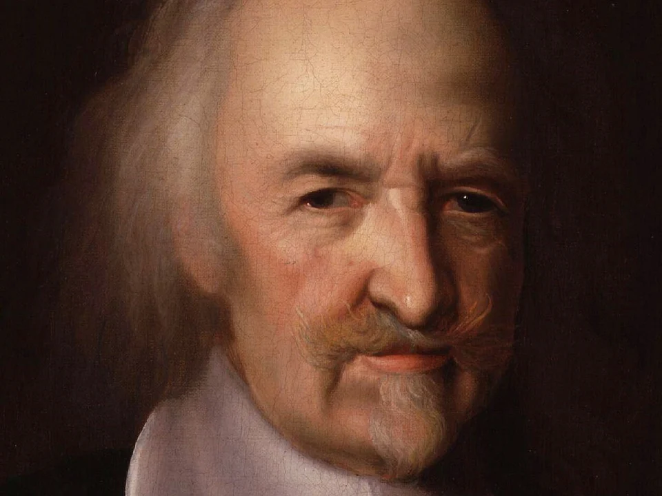

L'homme naît libre et perfectible ; la société l'a rendu inégal ; le contrat et l'éducation peuvent lui rendre sa liberté.
1Première idée
L'homme n'a pas de nature fixe
L'idée en clair
Un animal reste toute sa vie ce que son instinct a prévu. L'homme, lui, peut devenir très différent selon l'époque, la société et l'éducation. Pour Rousseau, ce qui fait l'homme n'est donc pas la raison, mais la liberté et la capacité de se transformer.
Ce que l'homme partage avec l'animal
Rousseau part d'une question simple : qu'est-ce qui fait de nous des hommes ? Pour y répondre, il compare l'homme à l'animal et regarde d'abord ce qu'ils ont en commun. Sa première conclusion surprend : ce n'est pas la raison qui nous sépare des bêtes.
Comme l'animal
L'homme a…
Des sens et des idées
Tout animal a des idées, puisqu'il a des sens.
Des besoins et un instinct
La nature commande à tout animal, et la bête obéit.
Conséquence : la raison ne suffit pas à distinguer l'homme de l'animal. Il faut chercher ailleurs.
Ce qui n'appartient qu'à l'homme : deux notions
Restent deux traits que l'animal n'a pas. Ce sont les deux premières notions de Rousseau à savoir définir, et elles vont ensemble : parce qu'il est libre, l'homme peut se transformer.
Notion 1
Agent libre
L'homme sent les mêmes besoins que l'animal, mais il n'est pas obligé de leur obéir : il peut choisir, et même résister.
Ce n'est donc pas tant l'entendement qui fait parmi les animaux la distinction spécifique de l'homme, que sa qualité d'agent libre.Discours sur l'inégalité, 1755
À retenir : le propre de l'homme est la liberté, pas l'intelligence.
Notion 2
Perfectibilité
La capacité de se transformer sans limite fixée d'avance. Un animal est, au bout de quelques mois, ce qu'il sera toute sa vie ; l'homme change toute sa vie, et l'espèce au fil des siècles.
La faculté de se perfectionner, presque illimitée.Discours sur l'inégalité, 1755
À retenir : ce n'est pas un progrès, c'est une possibilité.
La perfectibilité ouvre deux chemins
La perfectibilité est la notion la plus utile de Rousseau pour le thème de l'humanité. Mais attention à ne pas la confondre avec le progrès : elle ne garantit rien. Le schéma montre pourquoi elle peut mener aussi bien au meilleur qu'au pire.
Le meilleur
le langagela raisonla morale et les arts
Perfectibilitéla faculté de se transformer
Le pire
l'amour-proprel'inégalitéla servitude
La même faculté mène aux deux. Voilà pourquoi Rousseau la dit la source de tous les malheurs de l'homme : elle en fait le tyran de lui-même et de la nature.
2Deuxième idée
Le mal vient de la société, pas de la nature
L'idée en clair
Rousseau imagine l'homme avant toute société. Ce n'est pas une époque réelle, mais une expérience de pensée. Il en conclut que l'homme n'était pas méchant : c'est en vivant ensemble, en se comparant et en possédant que les hommes sont devenus jaloux, inégaux et violents.
Au départ : l'homme naturel
Pour savoir ce que la société a fait de l'homme, Rousseau commence par imaginer l'homme sans elle. Deux notions décrivent cet homme naturel : la situation où il vit, et le sentiment qui le retient de nuire.
Notion 3
État de nature
L'homme imaginé sans société : isolé, sans propriété ni rivaux, il n'a aucune raison de nuire. Il n'est ni bon ni méchant : il est innocent.
Un état qui n'existe plus, qui n'a peut-être point existé, qui probablement n'existera jamais.Discours sur l'inégalité, préface
À retenir : c'est une hypothèse, pour bien juger de notre état présent.
Notion 4
Pitié
Un sentiment naturel, plus ancien que la raison : on souffre de voir souffrir. Pour Rousseau, toutes les vertus en découlent : la générosité, la clémence, l'humanité.
Une répugnance naturelle à voir périr ou souffrir tout être sensible, et principalement nos semblables.Discours sur l'inégalité, préface
À retenir : la morale naît d'un sentiment, pas d'un raisonnement.
Ce qui change en société : l'amour de soi devient amour-propre
Quand les hommes commencent à vivre ensemble, un sentiment change de nature. C'est le cœur de l'explication de Rousseau : tout le reste en découle. Rousseau distingue pour cela deux passions très différentes, qu'on ne doit jamais confondre dans une copie.
Notion 5 · dans la nature
L'amour de soi
Naturel, il est là avant la sociétéIl veut seulement se conserver, être bienIl ne se compare à personne
Guidé par la raison et la pitié, il produit l'humanité et la vertu.
Les hommes se regardent et se comparent
c'est le basculement
Notion 6 · en société
L'amour-propre
Un sentiment relatif, factice et né dans la sociétéIl veut valoir plus que les autresIl vit du regard d'autrui
Il inspire aux hommes tous les maux qu'ils se font mutuellement.
Comment l'homme est devenu inégal, en quatre étapes
Dans la seconde partie du Discours sur l'inégalité, Rousseau raconte comment on est passé de l'homme seul à une société inégale. C'est une descente : à chaque marche, l'homme perd un peu de sa liberté et gagne un nouveau mal. À lire de haut en bas.
LibertéServitude
1
Le départ
L'homme seul
Libre et isolé, sans rivaux ni propriété, il suit l'amour de soi et la pitié. Les hommes sont alors ni bons ni méchants.
Ce que ça produitL'indépendance
2
Le regard
Ils se comparent
Devenus voisins, les hommes se regardent et veulent être regardés : l'estime publique eut un prix.
Ce que ça produitL'amour-propre, la jalousie
3
Le fer et le blé
Ils possèdent
Un homme enclôt un terrain et dit Ceci est à moi. Les talents inégaux deviennent des richesses inégales.
Ce que ça produitDes riches et des pauvres
4
Le piège
Les riches font les lois
Ils proposent un pacte qui promet la paix à tous mais protège leurs biens, et qui mène jusqu'au despotisme.
Ce que ça produitL'inégalité devenue un droit
DoncL'inégalité n'est pas naturelle : elle est l'œuvre des hommes. Et ce que les hommes ont fait, ils peuvent le défaire.
Le grand débat : l'homme est-il naturellement violent ?
Cette thèse vise un adversaire précis : Thomas Hobbes, pour qui les hommes sans État se font la guerre. Les deux philosophes partent de la même expérience de pensée, l'état de nature, et arrivent à des conclusions opposées. C'est le débat à connaître sur la nature humaine.

HobbesLéviathan, 1651
Sans État
C'est la guerre de chacun contre chacun.
La violence vient
de la nature humaine : rivalité, défiance, désir de gloire.
La solution
Un souverain tout-puissant qui impose la paix.
VS
RousseauDiscours sur l'inégalité, 1755
Sans État
Les hommes vivent dispersés, et en paix.
La violence vient
de la société : la comparaison, puis la propriété.
La solution
Un pacte où le peuple reste souverain, donc libre.
Le reproche de Rousseau
Ses prédécesseurs parlaient de l'homme sauvage, et ils peignaient l'homme civil : ils ont prêté à l'homme naturel les vices de l'homme social.
3Troisième idée
On ne revient pas en arrière : refaire la cité et l'homme
L'idée en clair
Rousseau ne veut pas qu'on retourne vivre comme des sauvages. Puisque le mal vient de la société, il faut une meilleure société et une meilleure éducation. D'où ses deux grands livres de 1762, qui répondent au même problème.
Un problème, deux réponses
Si le mal vient de la société, faut-il en sortir ? On prête souvent cette idée à Rousseau, mais il la rejette. Il propose à la place deux réponses complémentaires, publiées la même année : l'une pour la cité, l'autre pour l'individu.
La fausse solution
Revenir à la nature
Faut-il détruire les sociétés […] et retourner vivre dans les forêts avec les ours ?
Rousseau répond non : c'est une conséquence à la manière de mes adversaires. On ne peut pas effacer l'histoire.
Réponse 1 · Refaire la cité
Du contrat social, 1762
Le problèmeLes lois servent les riches.
La solutionChacun n'obéit qu'à la loi commune, la volonté générale.
Le résultatObéir à la loi, c'est obéir à soi-même.
L'homme est né libre, et partout il est dans les fers.
Réponse 2 · Refaire l'homme
Émile, 1762
Le problèmeLa société corrompt l'enfant dès le berceau.
La solutionÉlever l'enfant par l'expérience, loin des livres et de la ville.
Le résultatFormer un homme avant un citoyen.
Vivre est le métier que je lui veux apprendre.
Les notions de la refondation
Chaque réponse repose sur ses notions. Le Contrat social cherche une société où l'on obéit sans cesser d'être libre : d'où la volonté générale et la liberté inaliénable. Émile cherche comment on devient humain : d'où l'éducation négative.
Notion 7
Volonté générale
Ce que veut le peuple quand chacun pense en citoyen, à l'intérêt de tous. Ne pas la confondre avec la volonté de tous, simple addition des intérêts de chacun.
La volonté de tous
A+B+C=des intérêts
Chacun vote pour son intérêt privé.
La volonté générale
ABC→l'intérêt commun
Chacun vote pour ce qui vaut pour tous.
La volonté générale ne regarde qu'à l'intérêt commun.Du contrat social, livre II, chapitre 3
À retenir : ce n'est pas l'avis de la majorité, c'est l'intérêt commun.
Notion 8
Liberté inaliénable
On ne peut ni vendre ni donner sa liberté : un contrat d'esclavage est nul.
Renoncer à sa liberté c'est renoncer à sa qualité d'homme, aux droits de l'humanité, même à ses devoirs.Du contrat social, livre I, chapitre 4
Notion 9
Éducation négative
Au début, éduquer, c'est protéger plus qu'instruire : laisser l'enfant découvrir par lui-même.
La première éducation doit donc être purement négative.Émile, livre II
Rousseau et l'humanité
Huit questions du thème
Ce que Rousseau répond aux grandes questions du thème de l'humanité. Ouvrez une question pour lire l'argument à mettre dans la copie.
1Qu’est-ce qui distingue l’homme de l’animal ?Réponse : pas la raison, mais la liberté et la perfectibilité.
L'argument
Pour Rousseau, ce n’est pas la raison qui distingue l’homme de l’animal, puisque « tout animal a des idées, puisqu’il a des sens ». La différence tient à la liberté : l’animal obéit à l’instinct, l’homme peut résister à ses impulsions. Ce n’est donc pas « l’entendement » mais sa « qualité d’agent libre » qui fait sa spécificité (Discours sur l’inégalité, 1755). S’y ajoute la perfectibilité : un animal est au bout de quelques mois ce qu’il sera toute sa vie, l’homme ne cesse de se transformer.
Comment l'interpréter
Le propre de l’homme est un manque : il n’a pas de nature fixe. C’est sa grandeur, mais aussi sa fragilité, puisqu’il peut retomber « plus bas que la bête même ».
2Naît-on humain ou le devient-on ?Réponse : on naît avec la possibilité de le devenir.
L'argument
Chez Rousseau, les facultés humaines (langage, raison, morale) n’existent d’abord qu’en puissance : elles ne se développent qu’au contact des circonstances et des autres hommes. D’où la formule d’Émile (1762) : « On façonne les plantes par la culture, et les hommes par l’éducation. » Le but de l’éducation n’est pas de former un métier ou un rang, mais un homme : « Vivre est le métier que je lui veux apprendre. »
Comment l'interpréter
L’humanité est une tâche plus qu’un donné : être homme est un fait biologique, devenir humain est une œuvre. Le cas de Victor de l’Aveyron, privé de société, l’illustre.
3Être humain, est-ce un fait ou un devoir ?Réponse : l’espèce est un fait, la vertu d’humanité un devoir.
L'argument
Rousseau fonde l’humanité au sens moral non sur la raison mais sur la pitié, « répugnance naturelle à voir périr ou souffrir tout être sensible ». Toutes les vertus en découlent. La réflexion peut au contraire l’étouffer : c’est elle qui fait dire devant un malheureux « péris si tu veux, je suis en sûreté ».
Comment l'interpréter
Rousseau permet de jouer sur les deux sens du mot : l’humanité-espèce est un fait, l’humanité-vertu un devoir (« Hommes, soyez humains, c’est votre premier devoir », Émile). Et cette vertu peut reculer quand la civilisation avance.
4D’où vient l’inhumanité ?Réponse : de la société, pas de la nature.
L'argument
Contre Hobbes, Rousseau soutient que la méchanceté n’est pas naturelle : ses prédécesseurs « parlaient de l’homme sauvage, et ils peignaient l’homme civil ». L’inhumanité naît de la vie sociale. En se comparant, les hommes développent l’amour-propre, puis la propriété fait naître rivalité et domination (Discours sur l’inégalité, seconde partie).
Comment l'interpréter
Si le mal est social et historique, il n’est pas une fatalité : ce que la société a produit, une autre organisation politique (Du contrat social) ou une autre éducation (Émile) peut le corriger.
5Peut-on renoncer à son humanité ?Réponse : jamais en droit : la liberté ne se donne pas.
L'argument
Pour Rousseau, la liberté ne peut pas se céder : « Renoncer à sa liberté c’est renoncer à sa qualité d’homme, aux droits de l’humanité, même à ses devoirs » (Du contrat social, I, 4). Un pacte d’esclavage est donc nul : ôter toute liberté à la volonté, c’est ôter toute moralité aux actions.
Comment l'interpréter
On peut être asservi de fait, jamais de droit : la dignité humaine tient à la liberté. D’où l’idée qu’obéir à la loi qu’on s’est donnée, c’est rester libre.
6Le progrès rend-il l’homme plus humain ?Réponse : non : le progrès des sciences n’est pas un progrès moral.
L'argument
Contre l’optimisme des Lumières, Rousseau affirme dès 1750 que « nos âmes se sont corrompues à mesure que nos sciences et nos arts se sont avancés à la perfection » (Discours sur les sciences et les arts). Le progrès crée aussi de nouvelles dépendances : les commodités, devenues habituelles, sont « dégénérées en de vrais besoins ».
Comment l'interpréter
Rousseau ne condamne pas le savoir : il sépare progrès technique et progrès moral. C’est l’argument type d’une partie critique sur le progrès ou la civilisation.
7Comment penser l’humanité dans sa diversité ?Réponse : en comparant les peuples, en « portant sa vue au loin ».
L'argument
Rousseau reproche à ses contemporains de ne connaître de l’homme que les Européens : « il semble que la philosophie ne voyage point ». Pour lui, on ne peut penser l’humanité qu’en se décentrant : « pour étudier l’homme, il faut apprendre à porter sa vue au loin ; il faut d’abord observer les différences pour découvrir les propriétés » (Essai sur l’origine des langues).
Comment l'interpréter
L’universel humain ne s’obtient pas en généralisant sa propre culture, mais en comparant. Lévi-Strauss y voit la naissance de l’ethnologie ; attention à ne pas en faire un éloge du « bon sauvage ».
8Notre humanité nous oblige-t-elle envers les animaux ?Réponse : oui : la sensibilité, non la raison, fonde le devoir.
L'argument
Parce que la pitié porte sur « tout être sensible », Rousseau étend nos devoirs aux animaux : « si je suis obligé de ne faire aucun mal à mon semblable, c’est moins parce qu’il est un être raisonnable que parce qu’il est un être sensible » (Discours sur l’inégalité, préface). La bête a donc « le droit de n’être point maltraitée inutilement ».
Comment l'interpréter
C’est la souffrance, et non la raison, qui fonde le devoir : notre humanité se mesure aussi à la manière dont nous traitons ceux qui ne peuvent rien réclamer. À opposer à l’animal-machine de Descartes.
Avec et contre Rousseau
Six penseurs pour faire dialoguer la copie
Six auteurs à mettre en face de Rousseau dans une copie : ce que chacun défend, et son rapport à Rousseau.
Hobbes1588-1679
Ce qu'il défend
Sans État, les hommes vivent dans la peur : c'est la guerre de chacun contre chacun.
Face à Rousseau
Pour lui, la violence est naturelle ; pour Rousseau, elle naît de la vie en société.
Pic de la Mirandole1463-1494
Ce qu'il défend
Dieu a créé l'homme sans place ni forme fixe : à lui de se façonner lui-même.
Face à Rousseau
Rousseau en tire la perfectibilité, mais sans Dieu, et il en voit aussi le danger.
Voltaire1694-1778
Ce qu'il défend
La civilisation, les arts et le commerce rendent les hommes plus doux et plus heureux.
Face à Rousseau
Il croit au progrès, Rousseau en doute : il raille son livre contre le genre humain.
Diderot1713-1784
Ce qu'il défend
L'homme est fait pour la société, mais les conventions européennes l'étouffent.
Face à Rousseau
Même critique de la société que Rousseau, mais il garde sa confiance dans les Lumières.
Kant1724-1804
Ce qu'il défend
L'homme ne devient homme que par l'éducation, et chaque personne est une fin en soi.
Face à Rousseau
Il reprend de Rousseau l'idée d'une liberté qui se donne sa propre loi : l'autonomie.
Lévi-Strauss1908-2009
Ce qu'il défend
Aucune culture n'incarne seule l'humanité : croire qu'un peuple est barbare, c'est l'être.
Face à Rousseau
Comme Rousseau, il compare les peuples pour comprendre l'homme, et le salue pour cela.
Dans une copie
Comment utiliser Rousseau en dissertation
Tout ce qu'il faut pour placer Rousseau dans une dissertation : une accroche pour l'introduction, l'idée-force à défendre, les sujets où elle sert, les œuvres à citer et les erreurs qui coûtent des points.
Une accroche
« Le premier qui, ayant enclos un terrain, s'avisa de dire : Ceci est à moi, et trouva des gens assez simples pour le croire, fut le vrai fondateur de la société civile. » C'est ainsi que Rousseau ouvre, en 1755, la seconde partie de son Discours sur l'origine de l'inégalité.
Pour Rousseau, l'inégalité n'est pas inscrite dans la nature : elle naît d'un geste humain, et du consentement de ceux qui le laissent faire. Ce que les hommes ont fait, ils peuvent donc le défaire. L'humanité est-elle une nature ou une histoire ?
L'idée-force
Chez Rousseau, l'humanité est une histoire : l'homme n'a pas d'essence fixe, il devient ce que les circonstances et les institutions font de lui. D'où une ambivalence constante : la perfectibilité permet le langage, la raison, la morale, mais aussi l'amour-propre, l'inégalité et la servitude.
Nuance indispensable : rien n'est fatal. Ce que l'histoire a fait, la politique (le contrat) et l'éducation (Émile) peuvent le reprendre.
Des sujets où le placer
Le propre de l'homme existe-t-il ?
Devient-on humain ?
La civilisation rend-elle l'homme plus humain ?
L'inégalité est-elle naturelle ?
Peut-on renoncer à son humanité ?
Le progrès est-il un progrès de l'humanité ?
Les œuvres à citer
Discours sur l'origine et les fondements de l'inégalité parmi les hommes (1755) : perfectibilité, pitié, amour-propre, propriété.
Du contrat social (1762) : liberté inaliénable, volonté générale, souveraineté du peuple.
Émile, ou De l'éducation (1762) : former un homme avant un citoyen.
Essai sur l'origine des langues (posthume, 1781) : « pour étudier l'homme, il faut apprendre à porter sa vue au loin ».
Les erreurs à éviter
Parler du « bon sauvage » de Rousseau. L'expression n'est pas de lui, et l'homme naturel n'est « ni bon ni méchant » au sens moral : il est innocent.
Lui faire prôner le retour à la nature. Il le refuse explicitement (« retourner vivre dans les forêts avec les ours »).
Prendre l'état de nature pour une période historique. C'est une hypothèse, pour « bien juger de notre état présent ».
Confondre volonté générale et volonté de tous, simple addition des intérêts particuliers.
Faire de la perfectibilité un progrès. Elle est neutre, et souvent malheureuse.